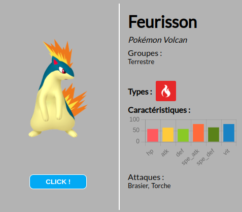
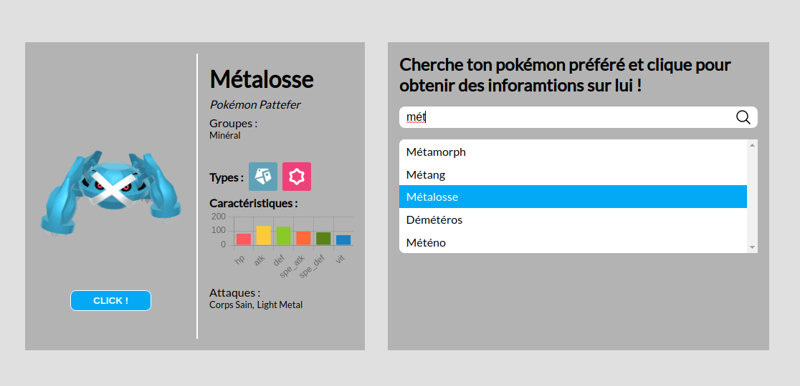

React intermédiaire
- MON
- 2022-2023
- temps 3
- Nicolas BERT
React intermédiaire (Temps 3)
Niveau : débutant/intermédiaire Prérequis :
- Connaître le contexte de développement frontend
- Connaître les bases de React
Pour ce MON, j'ai choisi de travailler avec React afin de maîtriser un peu mieux ce framework.
Apprentissage de React + mini-projet
J'ai d'abord commencé par lire la documentation de React ainsi que les autres MON relatifs à React. Ayant déjà fait beaucoup de Vue.js durant mon SSE l'année passée, les frameworks se ressemblant beaucoup, il n'a pas été très difficile de se lancé dans les bases de React.
Pour mettre en pratique ces apprentissages, j'ai voulu utiliser une API externe et implémenter quelques composants pour afficher les informations exposées par cette API. J'ai choisi une API sur l'univers des Pokémon. https://api-pokemon-fr.vercel.app/.
Design de la carte info
J'ai commencé par créer un composant visant à afficher les informations relatives à un pokémon. Mes compétences en design étant très mauvaises, je suis resté sur quelque chose de simple esthétiquement.
Ici vous pouvez voir le nom du pokémon, son type, ses caractéristiques représentées sous forme de graphique avec chart.js, etc... Le bouton "Click !" permet d'afficher un autre pokémon de manière aléatoire. Lors de l'affichage d'un pokémon, l'appel API pour le pokémon suivant est également effectué et l'image est préchargée afin de gagner en fluidité. Ainsi lorsque l'on appuie sur le bouton "Click !", le pokémon préalablement chargé devient le pokémon affiché et un autre pokémon est de nouveau préchargé dans le but d'un nouvel appui sur le bouton.
Fonctionnalité de recherche par nom
J'ai également implémenté une deuxième carte permettant cette fois-ci de rechercher un pokémon par son nom puis d'afficher ses caractéristiques.
Ici, vous avez la possibilité d'écrire le nom d'un pokémon puis de cliquer dessus parmi les choix proposés pour afficher ses informations dans la carte à gauche. Les suggestions sous la barre de saisie sont actualisées automatiquement en fonction de ce que vous écrivez.
Ce mini-projet a également été pour moi l'occasion de me remettre un peu au CSS (fini TailwindCSS...). Tout ça dans l'optique de me familiariser davantage avec l'environnement de développement que je vais utiliser en TFE.
Le lien du dépôt Github : https://github.com/nbert71/pokemon-react
Les différents hooks de React
Pour compléter ce MON, j'ai voulu m'informer sur tous les différents hooks React qui existent et faire en quelques sortes une synthèse qui puisse être utilisable par d'autres.
Source : https://fr.reactjs.org/docs/hooks-intro.html
Qu'est-ce qu'un hook ?
Les hooks ont été introduits avec la version 16.8 de React dans le but de bénéficier d'un état local de d'autres fonctionnalités sans avoir à écrire de classes.
Les hooks sont des fonctions qui permettent de "se brancher" sur la gestion d'état local et le cycle de vie de React depuis des components "fonctions". Ils ne fonctionnent pas dans les components "classes".
Nous allons désormais voir la liste des hooks prédéfinis par React qui sont les plus utilisés :
useState
Le hook useState est probablement un des plus simples. Il permet de définir une variable d'état locale au component.
Pour un component "Fonction" :
import React, { useState } from 'react';
function Example() {
// Déclare une nouvelle variable d'état, que l'on va appeler « count »
const [count, setCount] = useState(0);
return (
<div>
<p>Vous avez cliqué {count} fois</p>
<button onClick={() => setCount(count + 1)}>
Cliquez ici
</button>
</div>
);
}Son équivalent pour un component "Classe" :
class Example extends React.Component {
constructor(props) {
super(props);
this.state = {
count: 0
};
}
render() {
return (
<div>
<p>Vous avez cliqué {this.state.count} fois</p>
<button onClick={() => this.setState({ count: this.state.count + 1 })}>
Cliquez ici
</button>
</div>
);
}
}On adopte la syntaxe [myVariable, setMyVariable] en camelCase pour plus de clarté. En utilisant useState, on récupère donc une variable dont l'état est réactif et une fonction pour modifier cette variable et par la même occasion "re-render" le component. La valeur passée en paramètre de useState correspond à la valeur de la variable lors de l'initialisation du component. Dans l'exemple avec les classes, on utilise une seule variable qui est de type objet et qui s'appelle state et on la modifie avec setState en lui spécifiant un attribut.
useEffect
Le hook useEffectpermet l'exécution d'effets de bord dans les components fonctions. Il permet d'indiquer à React que notre composant doit exécuter quelque chose après chaque affichage. React enregistre la fonction passée en argument (appelée "effet") et l'appellera plus tard après avoir mis à jour le DOM.
import React, { useState, useEffect } from 'react';
function Example() {
const [count, setCount] = useState(0);
// Similaire à componentDidMount et componentDidUpdate :
useEffect(() => {
// Met à jour le titre du document via l’API du navigateur
document.title = `Vous avez cliqué ${count} fois`;
});
return (
<div>
<p>Vous avez cliqué {count} fois</p>
<button onClick={() => setCount(count + 1)}>
Cliquez ici
</button>
</div>
);
}Il également possible d'ajouter une liste de dépendances à notre useEffectafin de lui indiquer de s'exécuter uniquement que si certaines variables changent afin d'éviter de surcharger.
useEffect(() => {
document.title = `Vous avez cliqué ${count} fois`;
}, [count]); // N’exécute l’effet que si count a changéuseContext
Ce hook permet de récupérer la valeur du contexte. Un contexte peut être identifié à un state défini dans les components parents ou de manière global à l'application. Par exemple, pour gérer un dark mode.
const themes = {
light: {
foreground: "#000000",
background: "#eeeeee"
},
dark: {
foreground: "#ffffff",
background: "#222222"
}
};
const ThemeContext = React.createContext(themes.light);
function App() {
return (
<ThemeContext.Provider value={themes.dark}>
<Toolbar />
</ThemeContext.Provider>
);
}
function Toolbar(props){
return (
<div>
<ThemedButton />
</div>
);
}
function ThemedButton() {
const theme = useContext(ThemeContext);
return (
<button style={{ background: theme.background, color: theme.foreground }}>
Je suis stylé par le contexte de thème !
</button>
);
}
Autres ...
Les autres hooks existants ne sont que des variantes spécifiques à ceux déjà présentés.
useReducerpermet de gérer un state avec en plus un reducer, il s'agit d'une fonction que l'on définit et qui est plus complexe que le simple setter définit dans leuseStateet permet d'inclure plus de logique. Voici un exemple :
const initialState = {count: 0};
function reducer(state, action) {
switch (action.type) {
case 'increment':
return {count: state.count + 1};
case 'decrement':
return {count: state.count - 1};
default:
throw new Error();
}
}
function Counter() {
const [state, dispatch] = useReducer(reducer, initialState);
return (
<>
Total : {state.count}
<button onClick={() => dispatch({type: 'decrement'})}>-</button>
<button onClick={() => dispatch({type: 'increment'})}>+</button>
</>
);
}useRefpermet de récupérer et modifier un élement du DOM.
function TextInputWithFocusButton() {
const inputEl = useRef(null);
const onButtonClick = () => {
// `current` fait référence au champ textuel monté dans le DOM
inputEl.current.focus();
};
return (
<>
<input ref={inputEl} type="text" />
<button onClick={onButtonClick}>Donner le focus au champ</button>
</>
);
}Pour plus d'informations : https://fr.reactjs.org/docs/hooks-reference.html